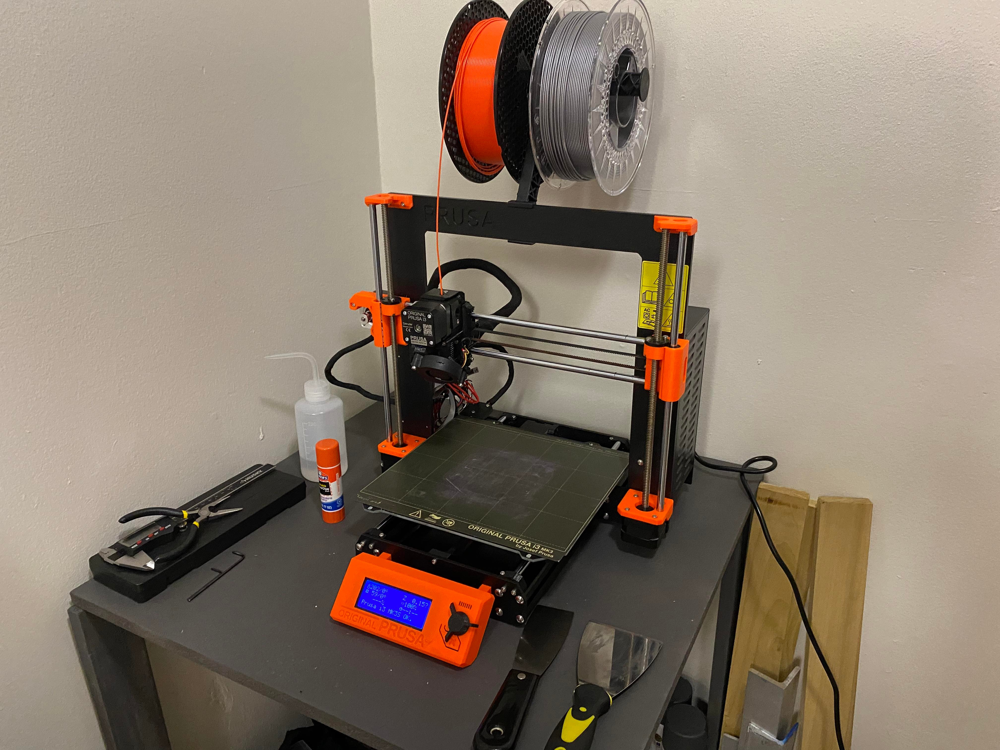
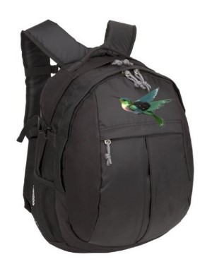
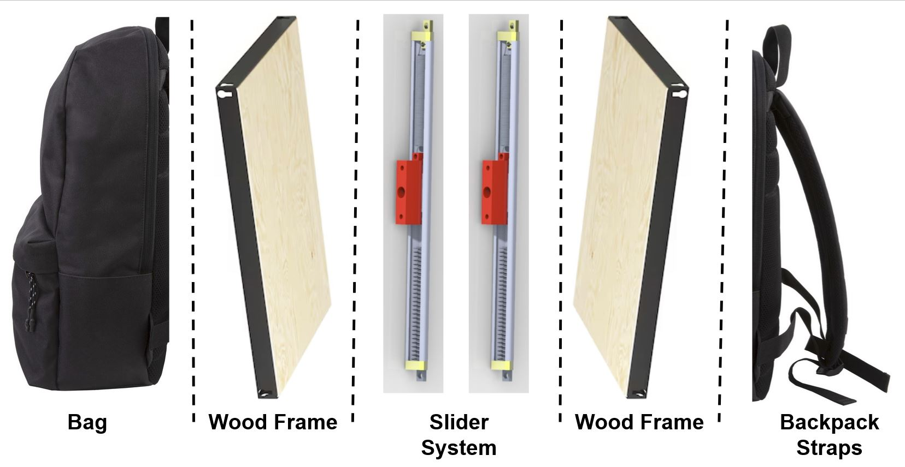
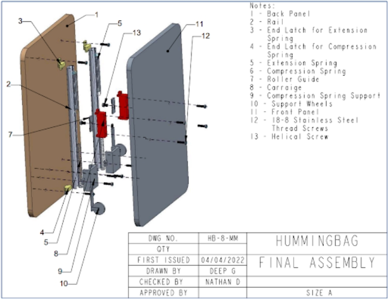

Drink Coaster
These hexagonal coasters are everywhere in my apartment, as one of my pet peeves is water marks. They also stack up in a really satisfying way.
Outside of classes, I'm usually always working on some type of personal project or design. Although I'm limited by my college student budget, I'm fortunate to have access to a number of resources on campus, such as the machine shop, mechatronics lab, and electrical engineering shop.
Here's my 3D printer setup with all my tools (I built and spray painted the table too) Learning about 3D printing was one of the reasons that I decided to study mechanical engineering. I was able to finally save up for a 3D printer, an Original Prusa i3 MK3S+, last year, which I've used to print random accessories that I use around my apartment. I ordered the Prusa and assembled it myself, which was a process that taught me a lot of things about the mechanics of 3D (and it felt like a grown up version of assembling a LEGO set). If you are interested, check out their website to read more about their printers which are actually composed of a lot of 3D printed parts.
Anyways, I have used my 3D printer to print out a lot of random projects that help me around my apartment. I've printed a small appliance to hold my toothbrush and toothpaste in my bathroom, a paper towel holder, and a bunch of drink coasters. I like to add in a little bit of my own personal style into all of these items, which uses a lot of hexagons (because they are mechanically superior to other shapes, and I think they look cool). I use Solidworks to design these items and then use Prusa's open-source slicer (PrusaSlicer) to export the print file. Check out my Thingiverse if you are wanted to see some more of my projects.
These hexagonal coasters are everywhere in my apartment, as one of my pet peeves is water marks. They also stack up in a really satisfying way.
I designed a custom toothbrush & toothpaste holder for my bathroom.
I saw a similar design online that was made out of wood, and I thought that the idea for this knife block was super cool. So I hopped on Solidworks and came up with this design with 3 parts - the centurion himself, the shield that holds the knives, and a base plate.
One of the most bothersome parts about being a student is having to carry around a heavy backpack with a laptop, textbooks, notebooks, and such around campus all day. There are solutions to this problem, such as the HoverGlide Floating Backpack, though prices range from $479 - $600, which is out of the budget of a typical broke college kid. My senior design group set out to solve this problem with the Hummingbag, a backpack that reduces the stress on the user's shoulder and back through the use of an oscillating spring system that is reasonably priced for a college student and resembles a traditional backpack. Other important design specifications for the HummingBag include its size, durability, and comfort, according to customer and market analysis.
 The first step of this project was the research and concept generation, which involved studying the needs of the target user group (students), and comparing existing backpack designs (mainly the HoverGlide). The next step was to start working on a prototype - we 3D printed parts (carriages, carriage supports, end latches, and spring supports) while the plywood panels were machined to attach the rails and other hardware during assembly. Next, all parts were assembled together to complete the slider system, and the panels were connected to the backpack and straps. Finally the iteration’s shortcomings were assessed, and any improvements to functionality and quality were discussed. We conducted 5 validation tests (max tension stress, max weight, carriage stress, and back panel weight) to ensure that our final prototype was up to the standards that we set out to achieve. Some of the results are shown below:
We compared the effective force on the user of the HummingBag with a regular backpack (both holding the same test mass), and compared the results. Our prototype reduced the average force by 15%.
Finite-element analysis were conducted on the 3D printed parts (specifically the end latch and the carriage), to ensure that no mechanical failure would occur. Using Solidworks, we were able to ensure that our 3D printed elements were in fact safe with factors of safety above 2.9.
We also needed to calculate the spring constants for the tension and compression springs used in the carriage to ensure that the bag was oscillating to the right amount of force, and to ensure that
the bag wouldn't break. After determining what specific springs we needed, we ordered the closest match on McMaster-Carr.
In conclusion, our group was able to produce a working prototype that effectively reduced the stress on a user's body while carrying a weight similar to that of what a typical college or high school student would be lugging around. The final price came out to $93.99, which is slightly more expensive than a coventional backpack, though the cost is lower than the competition (Hoverglide) and in the long run, much less expensive than the cost of physical therapy and back pain when you're older. The HummingBag final prototype is a promising product that performs well and adds value to business and society, and was a really fun project to work on. Senior design was my favorite class that I took in college due to the fact that we were physically designing and fabricating a product, so I was constantly in the prototyping lab, machine shop, or somewhere else in the Mechanical Engineering building with my friends.
I am also currently working on a side project with a couple of friends called 'FOMO', or the Future of Marketing Ourselves. This project makes use of NFC (Near-Field Communication), which is a short-range wirelses technology that allows for the exchange of data between devices. It is commonly used in contactless payments and electronic ticketing, though there are countless potential future applications of NFC technology, such as in smart homes, retail, health care, and so on. Our project aims to use NFC's to help people create unique profiles that can be easily accessed to help with networking and socializing. We don't expect FOMO to be a billion dollar idea; instead we are trying to familiarize ourselves with the technology to see what other potential applications there are to NFC's (with the real goal being to have something tangible and cool that we can pass around to our friends). I see the potential of NFC technology to be applied to robotics with identification, proximity sensing, and even ease-of-access for an engineer to send commands to a robot.